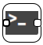
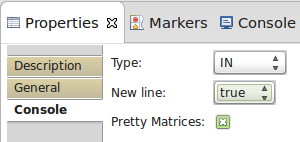
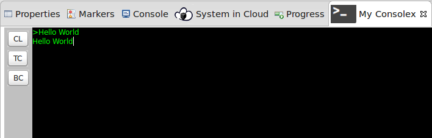

Console

Console Task enable communication with your system via Text commands as it would be a Linux terminal.
Input Ports:
- In optional = true, data type = Text
Incoming text will be displayed in Console View.
Output Ports:
- Out optional = true, data type = Text
Every new line will be put on port.
Properties:

- Type: IN|OUT|INOUT
Set if Console can only receive data, only input data or either both. - New line: true|false
Add new line sign at the end of received data if there is no one. - Pretty matrices: true|false
Display multidimensional data in form of matrices.
Console view:

Double clicking on diagram console will activate a console view. It is where you can write commands and see received messages.